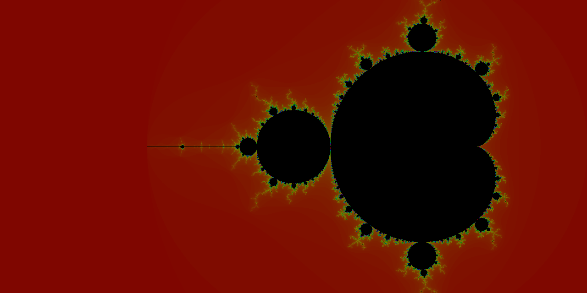
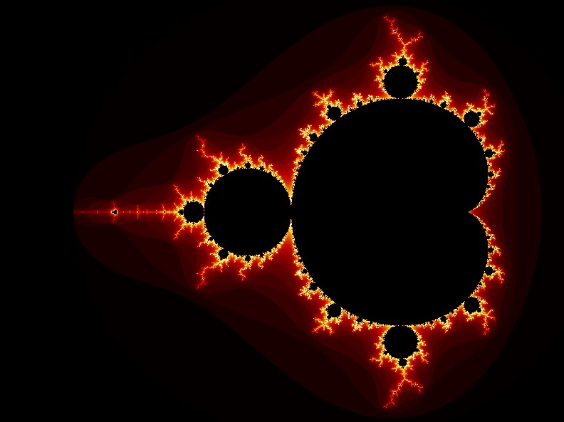
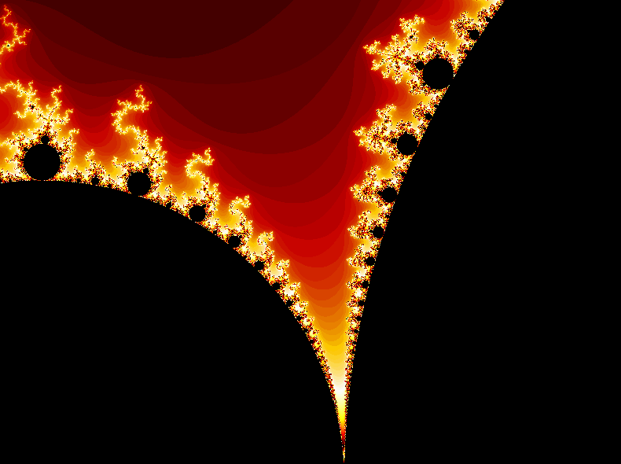

The Theory
The Mandelbrot Set, named after mathematician Benoit B. Mandelbrot and defined as the set of values of c in the complex plane for which the orbit of 0 under iteration of the quadratic map \(z_{n+1} = z_{n}^{2}+c\) remains bounded. Thus, a complex number c is a member of the Mandelbrot set if, when starting with \(z_{0} = 0\) and applying the iteration repeatedly, the absolute value of \(z_{n}\) remains bounded for all \(n\gt0\). While the mathematic intricacies are interesting, they are out of the scope of this article and you can read more about them here
From Math to The Computer Screen
The math itself is extremely cool, but perhaps the coolest thing about fractals is the hypnotic infinite repition of their small details. Because of this, I and many
other programmers and mathematicians have always set out to find cool ways to use a computer to visualize these fractals. In perhaps one of the most simplest ways,
I accomplished this with Python and created this nice little image:

The issue with this however, is the lack of zooming capabilities or use of the GPU to decrease processing time. I wanted to be able to massively increase the time and quality of my render, so I looked
to OpenGL to help me take advantage of the GPU. Rendering a 12k version of this image, took rougly 40 minutes on my (fairly high performance) computer.
OpenGL Implementation
My biggest reasoning for writing this blog post is the lack of information for achieving this visualization using the Core Profile of OpenGL. While indeed there are many resources
for creating a Mandelbrot Fractal in the Compatibility Profile of OpenGL, these were often outdated and taught practices that are no longer seen as the best in the Computer Graphics domain.
While I do not claim to be a graphics professional in anyway, I felt that it would be a great idea to outline these steps translated to the core profile. Because I did not come up with these myself,
in fact I used one of the aforementioned resources, you can find that article post here by John Tsiombikas.
I would also like to not that, I will not be covering the basics of OpenGL. Setting up the window, controlling the camera, buffers, etc will be excluded and more information on the basics of OpenGL
can be found below in the Additional Resources section.
Rendering a Quad and Texture Configuration
In order to render the fractal, we must have vertex data to pass into the graphics pipeline. We also will take use a of 1x256 palette texture to determine the color of every individual pixel. You can use this pre-defined vertex data or however you prefer to render a quad to the screen:
float vertices[] = {
1.0f, 1.0f, 0.0f, 1.0f, 1.0f, // top right
1.0f, -1.0f, 0.0f, 1.0f, 0.0f, // bottom right
-1.0f, -1.0f, 0.0f, 0.0f, 0.0f, // bottom left
-1.0f, 1.0f, 0.0f, 0.0f, 1.0f, // top left
};
unsigned int indices[] = { // note that we start from 0!
0, 1, 3, // first Triangle
1, 2, 3 // second Triangle
};
You'll also want to set up a texture for the shader, you can use this as the texture:
The Fragment and Vertex Shaders
While probably the most important part of this implementation, these shaders are rather simple. To implement, the vertex shader is perhaps the most barebones vertex shader one can produce:
// fractal.vert
#version 330 core
layout (location = 0) in vec3 aPos; // X Y Z Position
layout (location = 1) in vec2 aTexCoord; // X Y Texture Cooridinate
out vec2 TexCoord;
void main()
{
TexCoord = aTexCoord;
gl_Position = vec4(aPos, 1.0);
}
The fragment shader however is a bit more beefy and deserves a bit more description with it. Here is the code, commented but also with description below:
// fractal.frag
out vec4 FragColor;
in vec2 TexCoord;
uniform sampler2D texture1; // Pallete Texture Sampler
uniform vec2 center; // Reference Center of the Complex plane
uniform float scale; // The zoom factor for scaling
uniform int iter; // The maximum number of iterations
void main()
{
vec2 z, c; // C here is the familiar c from the quadratic map given earlier in the blog post
c.x = 1.3333 * (TexCoord.x - 0.5) * scale - center.x; // Properly scale the x coordinate of the complex number
c.y = (TexCoord.y - 0.5) * scale - center.y; // Properly scale the y coordinate of the complex number
int i; // Current iteration
z = c; // Copy c to preserve value as we iterate
// This for loop, is doing the non-trivial work.
// It is doing the reptitive iteration we mentioned in the theory section of the article.
for (i=0; i < iter; i++) {
float x = (z.x * z.x - z.y * z.y) + c.x;
float y = (z.y * z.x + z.x * z.y) + c.y;
if((x * x + y * y) > 4.0) break;
z.x = x;
z.y = y;
}
// Remember that we are using a 1D texture, so we only want to reference the x value of the texture
// We either want to color the pixel as part of the set or color it based on its ability to go to infinity
FragColor = texture(texture1, vec2((i == iter ? 0.0 : float(i)) / 100.0), 1);
}
Results
For me, this implementation produces the exact results as I was seeking. The quality is optimal and the time complexity is so small its not worth measuring.
Here is the fractal represented in its entirety, you can see the huge improvements to aesthetic and resolution even from afar:

For better understanding of the zooming capabilities, here is a zoomed in shot of what mathematicians refer to as "Sea Horse Valley"

I hope you enjoyed this article, and please let me know if there is any way I can assist you in getting this working properly.
I have linked several additional resources for your alls convience to help in your endeavors.
Thanks :)
Additional Resources:
- LearnOpenGl - an amazing resource for understanding the Core Profile of OpenGL
- Mathematica - an article on the Mandelbrot sets and the mathematics behind them
- John Tsiombikas Website - the article this was referenced and inspired by